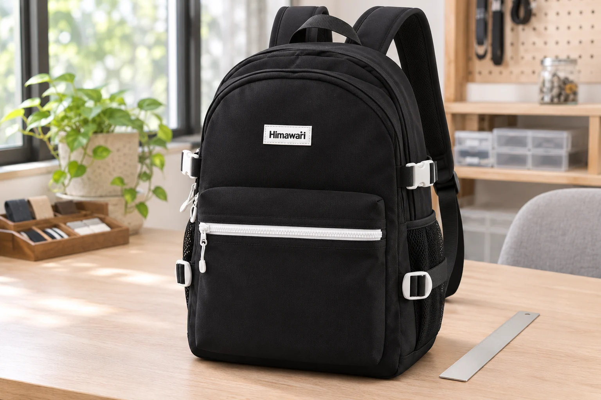
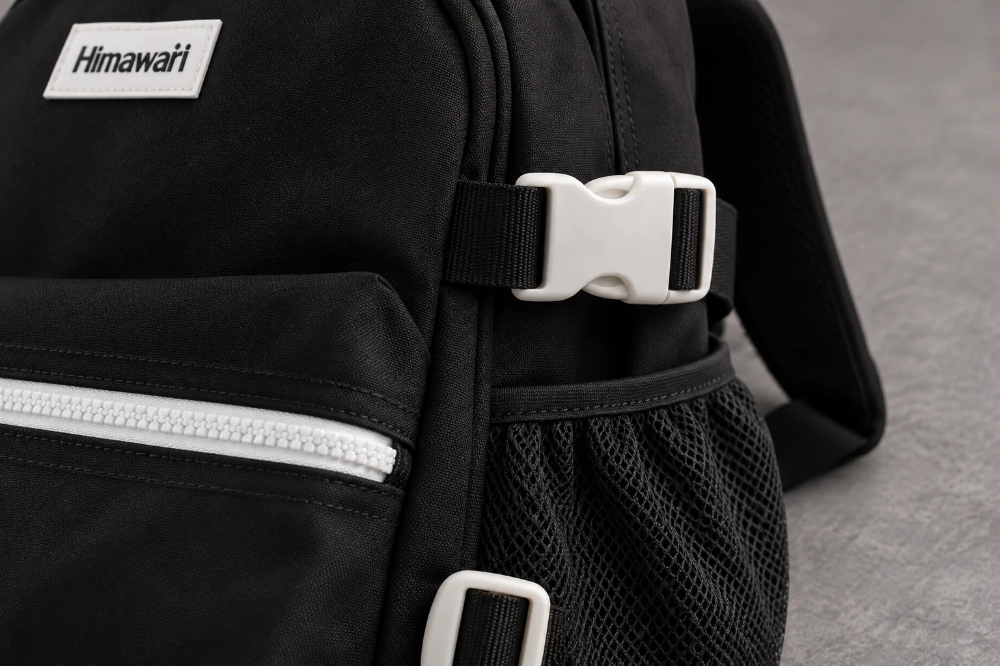
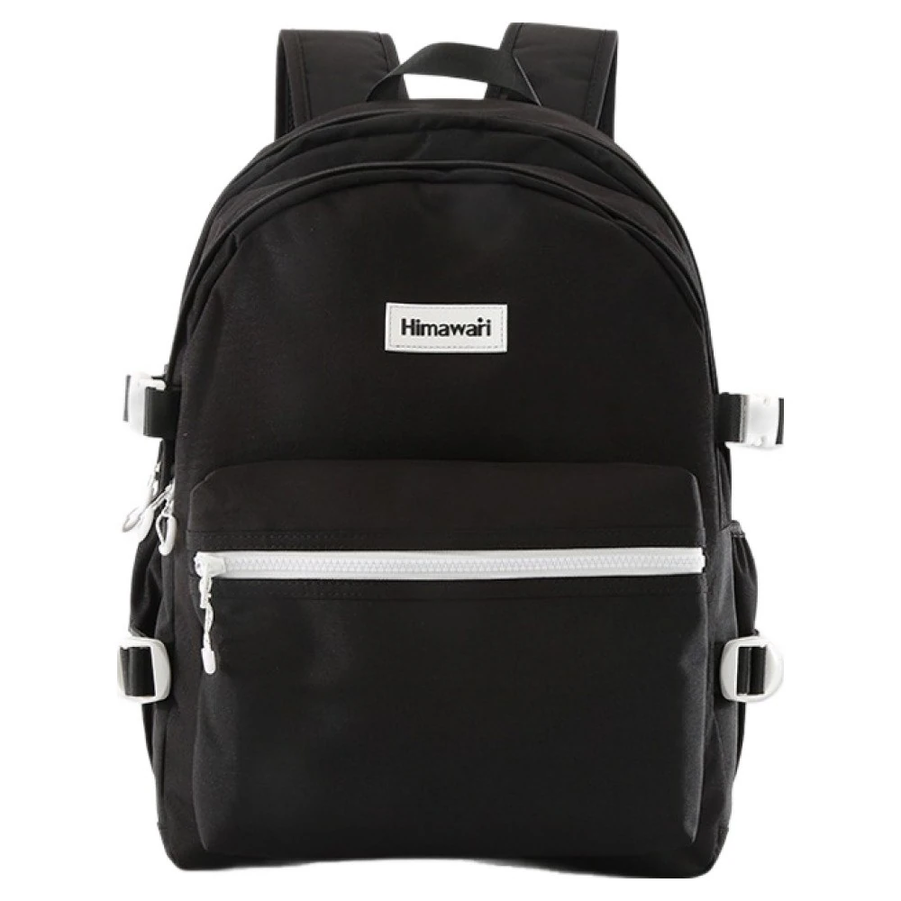

백팩 버클, 끈 폭만 같으면 다른 부품도 맞을까

백팩의 플라스틱 버클 한쪽을 바꾸려고 검색하면 20mm, 25mm 같은 숫자가 먼저 보입니다. 집에 있는 버클과 폭이 비슷해 보이면 반쪽만 사서 연결해도 될 것 같습니다. 그런데 끈이 지나가는 폭과 두 부품이 맞물리는 모양은 따로 확인해야 합니다. 같은 숫자가 적혀 있다는 이유만으로 서로 다른 버클의 결합을 보장할 수는 없습니다.
교체품을 찾을 때는 가방에 달린 부품의 이름부터 정리해 봅니다. No.9290 블랙의 실제 정면 사진에는 위쪽의 흰색 결합 버클과 아래쪽의 흰색 사각 조절 부품이 보입니다. 둘 다 검은 끈과 연결되어 있지만 움직이는 방식은 다릅니다. 이 글은 특정 교체품의 호환을 확인한 수선 안내가 아닙니다. 부품을 주문하기 전에 어떤 정보를 나누어 물으면 좋을지 살펴봅니다.
상품의 mm 표시는 어느 폭을 말할까요
버클에서 가장 넓은 바깥 부분을 재고 그 숫자로 검색하면 원하는 부품과 다른 후보를 고를 수 있습니다. 예를 들어 Sea to Summit은 자사 수선용 버클의 크기를 버클 몸체의 바깥 폭이 아닌 웨빙의 폭을 기준으로 설명합니다. 웨빙은 버클에 끼워 쓰는 납작한 띠입니다. 이런 표기에서는 25mm라는 값이 가방에 달린 흰색 부품 전체의 가로 길이를 뜻하지 않습니다.
지금 고른 판매처의 규격 설명도 같은 기준인지 확인합니다. 가방의 끈은 비틀리지 않게 펼친 상태에서 보고 어느 끈을 재었는지 사진에 함께 남깁니다. 어깨의 두꺼운 쿠션 끈과 옆면의 얇은 띠는 다른 부위이므로 어깨끈 폭을 옆 버클의 규격으로 옮겨 적지 않습니다. 끈의 폭을 확인했더라도 두께나 접힌 겹수까지 같은지는 아직 모릅니다.
No.9290의 외부 크기는 가로 30 × 세로 42 × 폭 18cm입니다. 이 세 숫자는 가방 전체를 비교할 때 쓰는 값입니다. 옆면 버클을 주문할 mm 규격이나 끈의 실제 폭은 이 사양에서 계산할 수 없습니다. 가방 외부 폭과 부품 규격을 같은 표의 숫자로 취급하지 않는 것만으로도 잘못된 후보를 줄일 수 있습니다.

남아 있는 반쪽과 결합할 수 있는지는 별도입니다
한쪽 부품만 없어졌다면 남은 반쪽을 그대로 쓰고 싶을 수 있습니다. 이때 판매처에는 폭이 같은지와 별개로 기존 반쪽과 맞물리는 부품인지 물어봅니다. 걸리는 돌기와 홈, 끼워지는 깊이 같은 결합부는 바깥 사진 한 장에서 모두 보이지 않습니다. 모양이 닮았다고 끝까지 눌러 끼워 보는 방법으로 호환을 확인하지 않습니다.
먼저 기존 부품에 적힌 제조사나 형식 표시가 있는지 봅니다. 읽히지 않는 문자를 추측해 적기보다 앞면과 뒷면을 같은 방향으로 촬영하면 됩니다. 한쪽만 교체하는 제품인지 양쪽을 함께 바꾸는 구성인지도 주문 전에 확인합니다. 양쪽이 한 세트로 판매된다는 사실만으로 현재 가방에 손쉽게 설치된다는 결론까지 내리지는 않습니다.
새 부품이 잠기는 것처럼 느껴져도 그 느낌만으로 고정력이나 사용 중 유지 상태를 판단할 수 없습니다. 가방을 든 채 시험하거나 원래 부품보다 무거운 것을 매달아 볼 이유도 없습니다. 판매처가 확인할 수 있는 모델 정보와 결합부 사진을 먼저 전달하고 설명이 맞지 않으면 사용을 시작하기 전에 다시 문의하는 편이 낫습니다.

끈에서 빼낼 수 있는 쪽과 봉제된 쪽을 구분합니다
맞물리는 모양을 찾았더라도 가방에 연결할 방법이 남아 있습니다. 끈이 조절부를 통과하는 쪽과 짧은 끈 고리에 봉제되어 있는 쪽은 교체 과정이 같지 않습니다. 제조사의 수선용 부품 설명에도 고정된 끝과 조절 가능한 끝을 구분한 제품이 있습니다. 숫자와 색만 비교하면 이 차이를 놓치기 쉽습니다.
현재 가방에서 어느 쪽이 풀리는지 알아보려고 봉제선을 뜯거나 부품을 잘라낼 필요는 없습니다. 연결된 상태로 끈의 앞뒤가 보이게 사진을 남깁니다. 버클의 뒤쪽이 가려져 있다면 전체를 해체하지 않고 확인할 수 있는 추가 자료가 있는지 판매처에 물어볼 수 있습니다. 안 보이는 부분은 모른다고 남겨두는 편이 임의로 수선한 상태보다 설명하기 쉽습니다.
No.9290 사진에서 위쪽 흰색 버클 아래로 사각 조절 부품이 따로 보이는 이유도 여기에 있습니다. 아래쪽 부품에 끈이 통과한다고 해서 위쪽 버클까지 같은 방식으로 빠진다는 뜻은 아닙니다. 어느 부품의 결합 문제인지 정한 뒤 그 부품이 가방에 붙어 있는 방식으로 질문을 좁혀 갑니다.
주문 전 메모에는 규격과 연결 조건을 함께 적습니다
색이 맞는지도 그다음에 확인할 항목입니다. No.9290처럼 흰 부품이 앞 지퍼와 함께 보이는 가방에서는 교체한 부분의 색이 외관에 영향을 줄 수 있습니다. 그러나 흰색이라는 조건이 맞아도 연결 규격이 맞지 않으면 같은 후보로 선택하기 어렵습니다. 먼저 사용 가능한 구성인지 확인하고 그 범위 안에서 원래 외관과 어울리는 색을 찾습니다. 다른 부품을 연결한 연출 사진을 실제 교체가 끝난 결과처럼 받아들이지 않는 것도 필요합니다.
교체품 문의에는 가방 모델명, 문제가 생긴 위치, 남아 있는 부품의 표시, 끈 폭을 확인한 기준을 적을 수 있습니다. 기존 반쪽을 유지할지, 양쪽 교체가 필요한지도 함께 묻습니다. 사진은 가방 전체에서 해당 부위로 이어지게 고르면 같은 흰색 부품이 여러 개 있어도 위치를 설명하기 쉽습니다.
답변을 받은 다음에는 안내된 규격이 무엇의 폭인지, 구성품이 어느 쪽까지 포함하는지 다시 맞춰 봅니다. 확인되지 않은 부품을 미리 분해해 두면 원래 상태를 설명할 자료가 줄어듭니다. 사용 가능한 교체품과 작업 방법이 확인될 때까지 가방의 연결 상태를 보존하세요. 끈의 폭은 후보를 찾는 정보이고 결합과 설치 방식은 그 후보를 선택할 수 있는지 판단할 정보입니다.
일반 구조와 제품 표기의 참고 자료: Sea to Summit 수선용 버클의 규격과 고정 방식.